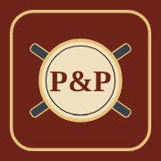
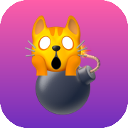

Board Games
Giochi da tavolo da fare online con gli amici, ognuno dal proprio telefono. Niente account: apri un tavolo e manda il link.

Bang!
Gioco di carte western a ruoli segreti: Sceriffo, Vice, Fuorilegge e Rinnegato
Wizard
Gioco di carte a prese: prevedi quante ne farai, poi fanne esattamente quelle. Con Arcimaghi e Giullari.

Exploding Kittens
Gioco di carte esplosivo: pesca senza far scoppiare la Gattomina, soffia sulle mosse altrui e resta l’ultimo intero.